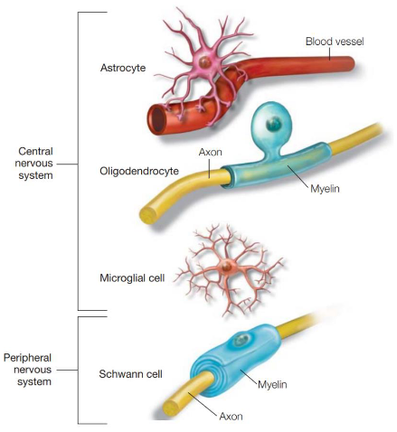

Glalias
Glalias are the cells in the brain responsible for protection, isolation and feeding of the Neurons . Here are the different types of glalias:  There are 2 to 10 times more glalias in the brain than neurons.
Microglalia
They are the glalias that protect the brain, identifying when something goes wrong and prepare a response to remove the toxic agent and clear away the dead cells. They are mobilized to present antigens and become phagocytes during injury, infection, or degenerative diseases. If they become hyper-activated, they can cause neurodegenerative diseases like Alzheimer, promoting toxic protein deposit like amyloid plaques and neurofibrillary tangles.
Astrocytes
They constitute nearly half of the brain cells. Their job is to provide food (nourishing neurons) and regulate the concentration of Ions and neurotransmitters in the extracellular space. Astrocytes and neurons communicate with each other to modulate synaptic signaling in ways that are still poorly understood. Maintain the blood-brain barrier, between the
tissues of the central nervous system and the blood
Oligodendrocytes and Schwann cells
Both oligodendrocytes and Schwann cells have the same role: they insulate the axons of the neurons. The oligodendrocytes are in the central nervous system, while Schwann cells are in the peripheral one. They produce thin sheets of myelin that wrap concentrically, many times, around the axon of neurons to allow rapid conduction of electrical signals along the axon. The cytoplasm in that portion of the glial cell is squeezed out, leaving primarily the lipid bilayer of the glial cell sheathing the membrane. Note that myelin is white, giving "white
matter" its name